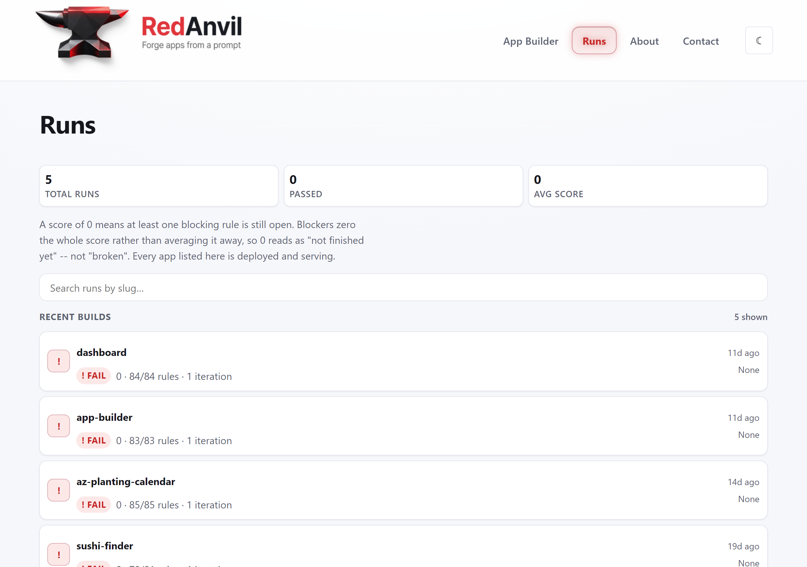
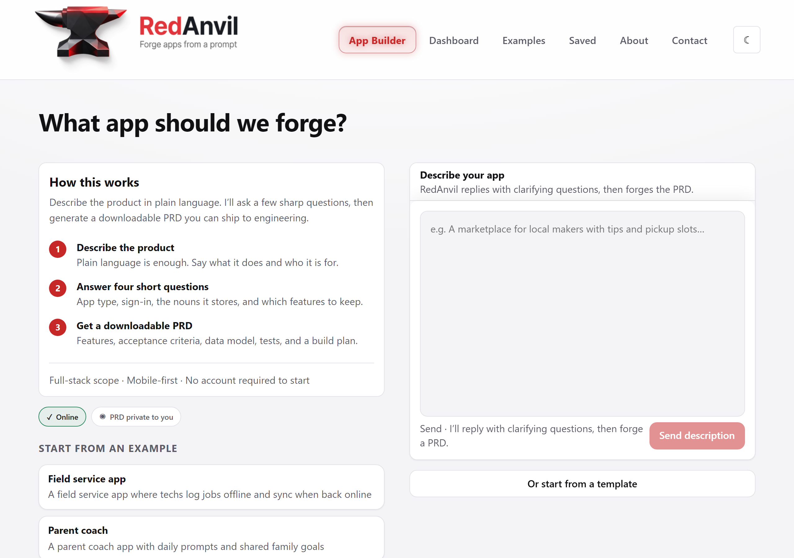
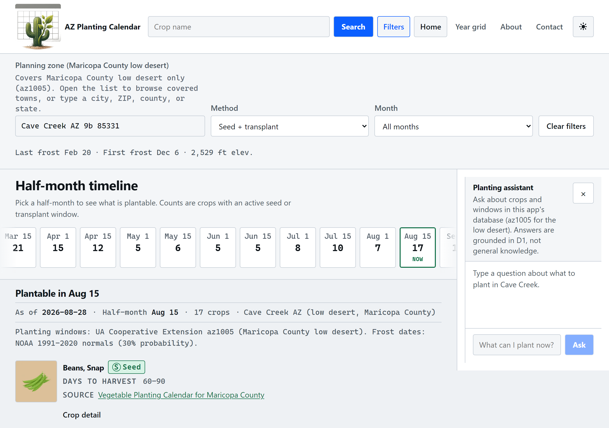
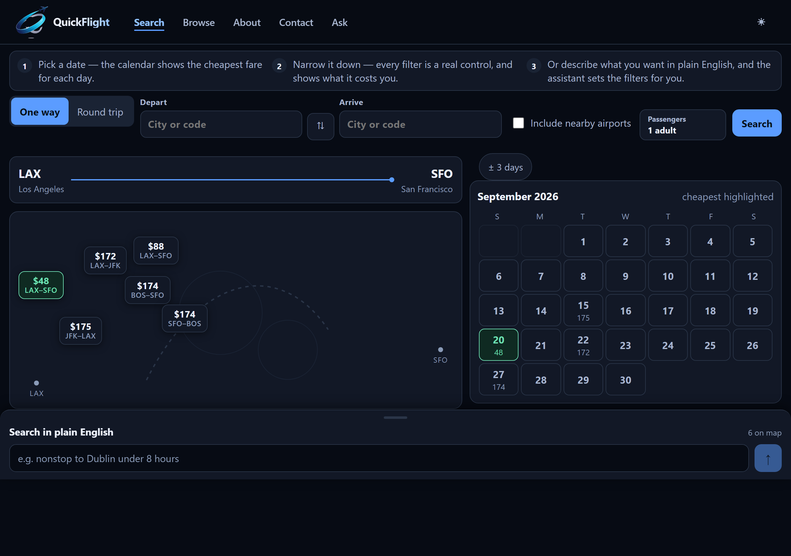
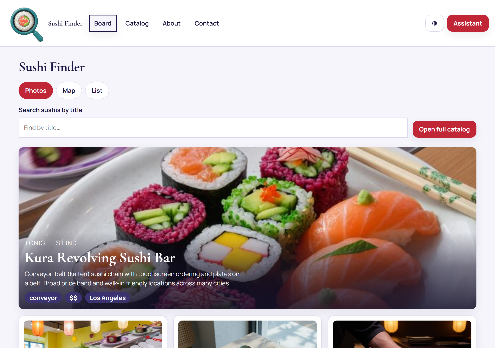
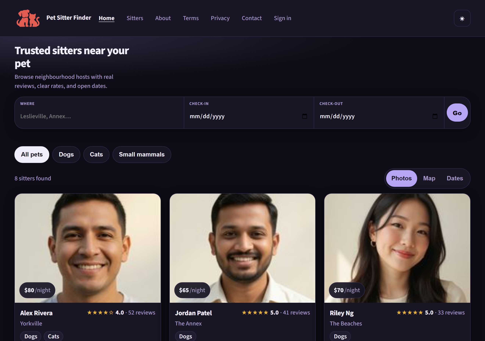

1Brand bannerOptional lead image if you want the brand first.

2The scoreboard5 runs, 0 passed, 0 avg score, with the on-page note explaining what a 0 means. The honesty angle.

3App builderPrompt to PRD, three steps and a four-question wizard.

4AZ Planting CalendarUA Cooperative Extension az1005 windows, NOAA 1991–2020 frost normals, assistant grounded in D1.

5QuickFlightCheapest-day calendar, route map, plain-English search that sets the filters.

6Sushi FinderEditorial layout, photos/map/list views.

7Pet Sitter FinderMarketplace layout, date search, ratings. One CSP console warning.